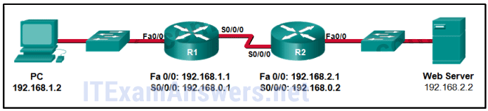
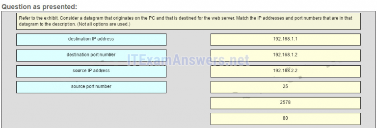
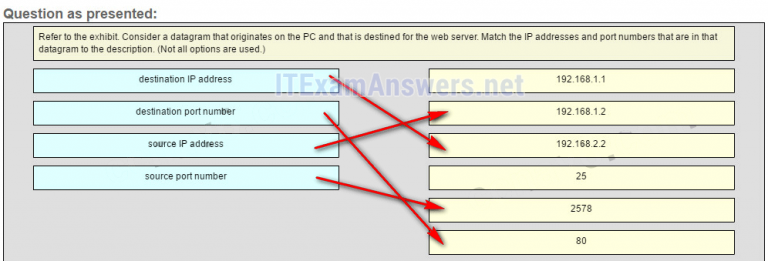
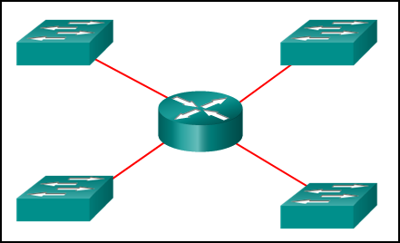
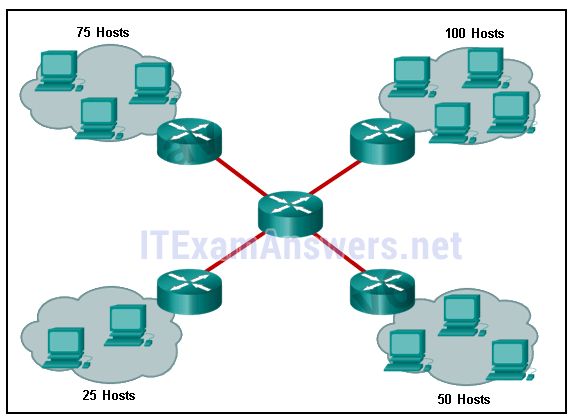
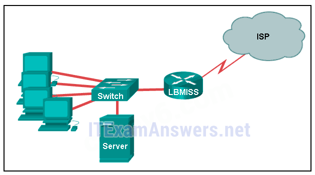
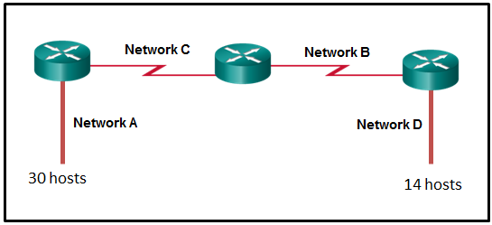

1.¿Qué dos características están asociadas con las sesiones UDP? (Escoge dos.)
- Los dispositivos de destino reciben tráfico con un retraso mínimo. *
- Los segmentos de datos transmitidos son rastreados.
- Los datos recibidos no son reconocidos. *
- Los dispositivos de destino vuelven a ensamblar mensajes y los pasan a una aplicación.
- @javi__super
Explique:
TCP:
Proporciona seguimiento de segmentos de datos transmitidos
Los dispositivos de destino reconocerán los datos recibidos.
Los dispositivos de origen retransmitirán los datos no reconocidos.
UDP
Los dispositivos de destino no reconocerán los datos recibidos
Los encabezados usan muy poca sobrecarga y causan un retraso mínimo.
2.¿Qué sucede si parte de un mensaje FTP no se entrega al destino?
- La parte del mensaje FTP que se perdió se reenvía. *
- El mensaje se pierde porque FTP no utiliza un método de entrega confiable.
- El host de origen FTP envía una consulta al host de destino.
- Se reenvía todo el mensaje FTP.
- @javi__super
Explique:
debido a que FTP utiliza TCP como su protocolo de capa de transporte, los números de secuencia y reconocimiento identificarán los segmentos faltantes, que se reenviarán para completar el mensaje.
3.Un dispositivo host debe enviar un archivo de video grande a través de la red mientras proporciona comunicación de datos a otros usuarios. ¿Qué característica permitirá que se produzcan diferentes flujos de comunicación al mismo tiempo, sin tener un solo flujo de datos utilizando todo el ancho de banda disponible?
- multiplexación *
- tamaño de ventana
- números de puerto
- expresiones de gratitud
- @javi__super
Explique:
la
multiplexación es útil para intercalar múltiples flujos de comunicación. El tamaño de la ventana se utiliza para disminuir la velocidad de comunicación de datos. Los números de puerto se utilizan para pasar flujos de datos a sus aplicaciones adecuadas. Los agradecimientos se utilizan para notificar a un dispositivo de envío que se ha recibido o no un flujo de paquetes de datos.
4.¿Qué tipo de puerto debe solicitarse a la IANA para poder utilizarlo con una aplicación específica?
- puerto registrado *
- Puerto privado
- puerto dinámico
- Puerto de origen
- @javi__super
Explicación:
IANA asigna los puertos registrados (números 1024 a 49151) a una entidad solicitante para que los utilice con procesos o aplicaciones específicos. Estos procesos son principalmente aplicaciones individuales que el usuario ha elegido para instalar, en lugar de aplicaciones comunes que recibirían un número de puerto conocido. Por ejemplo, Cisco ha registrado el puerto 1985 para su proceso de Protocolo de enrutamiento Hot Standby (HSRP).
5.¿Qué tipo de información se incluye en el encabezado de transporte?
- números de puerto de origen y destino *
- Direcciones lógicas de origen y destino
- Direcciones físicas de origen y destino
- datos codificados de la aplicación
- @javi__super
Explicación:
en un segmento, el encabezado de la capa de transporte incluirá el proceso de origen y destino, o los números de puerto. El direccionamiento físico de origen y destino se incluye en el encabezado del marco. El direccionamiento lógico de origen y destino se incluye en el encabezado de la red. Los datos de la aplicación se codifican en las capas superiores de la pila de protocolos.
6.¿Qué es un socket?
- la combinación de una dirección IP de origen y un número de puerto o una dirección IP de destino y un número de puerto *
- la combinación de la dirección IP de origen y destino y la dirección Ethernet de origen y destino
- La combinación de la secuencia de origen y destino y los números de acuse de recibo.
- la combinación de los números de secuencia de origen y destino y los números de puerto
- @javi__super
Explicar:
un socket es una combinación de la dirección IP de origen y el puerto de origen o la dirección IP de destino y el número de puerto de destino.
7.¿Cuál es el rango completo de puertos TCP y UDP conocidos?
- 0 a 1023 *
- 0 a 255
- 256 - 1023
- 1024 - 49151
- @javi__super
Explique:
hay tres rangos de puertos TCP y UDP. El conocido rango de números de puerto es de 0 a 1023.
8.¿Qué indicador en el encabezado TCP se usa en respuesta a un FIN recibido para terminar la conectividad entre dos dispositivos de red?
- ACK *
- ALETA
- RST
- SYN
- @javi__super
Explicar:
en una sesión TCP, cuando un dispositivo no tiene más datos para enviar, enviará un segmento con el indicador FIN establecido. El dispositivo conectado que recibe el segmento responderá con un ACK para reconocer ese segmento. El dispositivo que envió el ACK enviará un mensaje FIN para cerrar la conexión que tiene con el otro dispositivo. El envío del FIN debe seguirse con la recepción de un ACK del otro dispositivo.
9.¿Cuál es una característica de un proceso de servidor TCP?
- Puede haber muchos puertos abiertos simultáneamente en un servidor, uno para cada aplicación de servidor activa. *
- Cada proceso de aplicación que se ejecuta en el servidor debe configurarse para usar un número de puerto dinámico.
- Un servidor individual puede tener dos servicios asignados al mismo número de puerto dentro de los mismos servicios de la capa de transporte.
- Un host que ejecuta dos aplicaciones diferentes puede tener ambos configurados para usar el mismo puerto de servidor.
- @javi__super
Explique:
Cada proceso de aplicación que se ejecuta en el servidor está configurado para usar un número de puerto, ya sea de forma predeterminada o manual, por un administrador del sistema. Un servidor individual no puede tener dos servicios asignados al mismo número de puerto dentro de los mismos servicios de la capa de transporte. Un host que ejecuta una aplicación de servidor web y una aplicación de transferencia de archivos no pueden tener ambos configurados para usar el mismo puerto de servidor. Puede haber muchos puertos abiertos simultáneamente en un servidor, uno para cada aplicación de servidor activa.
10.¿Qué dos indicadores en el encabezado TCP se utilizan en un protocolo de enlace de tres vías TCP para establecer la conectividad entre dos dispositivos de red? (Escoge dos.)
- ACK *
- ALETA
- PSH
- SYN *
- @javi__super
Explique:
TCP utiliza los indicadores SYN y ACK para establecer la conectividad entre dos dispositivos de red.
11.Una PC está descargando un archivo grande desde un servidor. La ventana TCP es de 1000 bytes. El servidor está enviando el archivo utilizando segmentos de 100 bytes. ¿Cuántos segmentos enviará el servidor antes de que requiera un acuse de recibo de la PC?
- 10 segmentos *
- 100 segmentos
- 1000 segmentos
- 0 segmentos
- @javi__super
Explique:
con una ventana de 1000 bytes, el host de destino acepta segmentos hasta que se hayan recibido los 1000 bytes de datos. Entonces el host de destino envía un acuse de recibo.
12.¿Qué factor determina el tamaño de la ventana TCP?
- la cantidad de datos que el destino puede procesar a la vez *
- La cantidad de datos a transmitir.
- El número de servicios incluidos en el segmento TCP.
- La cantidad de datos que la fuente puede enviar al mismo tiempo.
- @javi__super
Explicar:
la
ventana es el número de bytes que enviará el remitente antes de esperar un acuse de recibo del dispositivo de destino. La ventana inicial se acordó durante el inicio de la sesión a través del protocolo de enlace de tres vías entre el origen y el destino. Se determina según la cantidad de datos que el dispositivo de destino de una sesión TCP pueda aceptar y procesar al mismo tiempo.
13.Durante una sesión TCP, un dispositivo de destino envía un número de confirmación al dispositivo de origen. ¿Qué representa el número de acuse de recibo?
- el siguiente byte que el destino espera recibir *
- el número total de bytes que se han recibido
- un número más que el número de secuencia
- El último número de secuencia que fue enviado por la fuente.
- @javi__super
14.¿Qué información utiliza TCP para volver a montar y reordenar los segmentos recibidos?
- números de secuencia *
- números de puerto
- números de acuse de recibo
- números de fragmentos
- @javi__super
Explique:
En la capa de transporte, TCP usa los números de secuencia en el encabezado de cada segmento TCP para volver a ensamblar los segmentos en el orden correcto.
15.¿Qué hace TCP si el origen de envío detecta la congestión de la red en la ruta al destino?
- La fuente disminuirá la cantidad de datos que envía antes de que deba recibir acuses de recibo del destino. *
- El host de origen enviará una solicitud de acuses de recibo más frecuentes al destino.
- El destino solicitará la retransmisión de todo el mensaje.
- La fuente reconocerá el último segmento que se envió e incluirá una solicitud para un tamaño de ventana más pequeño en el mensaje.
- @javi__super
Explique:
si la fuente determina que los segmentos TCP no se reconocen o no se reconocen de manera oportuna, puede reducir la cantidad de bytes que envía antes de recibir una confirmación. Tenga en cuenta que es la fuente la que reduce el número de bytes no reconocidos que envía. Esto no implica cambiar el tamaño de la ventana en el encabezado del segmento.
16.¿Cuál es una característica de UDP?
- UDP vuelve a montar los datagramas recibidos en el orden en que se recibieron. *
- Los datagramas UDP toman la misma ruta y llegan en el orden correcto al destino.
- Las aplicaciones que usan UDP siempre se consideran poco confiables.
- UDP solo pasa los datos a la red cuando el destino está listo para recibir los datos.
- @javi__super
Explique:
UDP no tiene forma de reordenar los datagramas en su orden de transmisión, por lo que UDP simplemente vuelve a montar los datos en el orden en que se recibieron y los reenvía a la aplicación.
17.¿Qué hace un cliente cuando tiene que enviar datagramas UDP?
- Simplemente envía los datagramas. *
- Consulta al servidor para ver si está listo para recibir datos.
- Envía un protocolo de enlace de tres vías simplificado al servidor.
- Envía al servidor un segmento con el indicador SYN configurado para sincronizar la conversación.
- @javi__super
Explicar:
cuando un cliente tiene datagramas UDP para enviar, simplemente envía los datagramas.
18.¿Qué sucede si se pierde el primer paquete de una transferencia TFTP?
- La aplicación TFTP volverá a intentar la solicitud si no se recibe una respuesta. *
- El cliente esperará indefinidamente la respuesta.
- El enrutador del siguiente salto o la puerta de enlace predeterminada proporcionarán una respuesta con un código de error.
- La capa de transporte volverá a intentar la consulta si no se recibe una respuesta.
- @javi__super
Explique:
el protocolo TFTP utiliza UDP para las consultas, por lo que la aplicación TFTP debe implementar la confiabilidad, si es necesario.
19.Un dispositivo host recibe video en vivo. ¿Cómo contabiliza el dispositivo los datos de video que se pierden durante la transmisión?
- El dispositivo continuará recibiendo la transmisión de video, pero puede haber una interrupción momentánea. *
- El dispositivo solicitará inmediatamente una retransmisión de los datos faltantes.
- El dispositivo utilizará números de secuencia para pausar la transmisión de video hasta que lleguen los datos correctos.
- El dispositivo retrasará la transmisión de video hasta que se reciba la transmisión de video completa.
- @javi__super
Explicación:
cuando se utiliza TCP como protocolo de transporte, los datos deben recibirse en una secuencia específica o todos los datos deben recibirse en su totalidad para que se puedan utilizar. TCP utilizará números de secuencia, reconocimientos y retransmisión para lograr esto. Sin embargo, cuando se utiliza UDP como protocolo de transporte, los datos que llegan fuera de orden o con segmentos faltantes pueden causar una interrupción momentánea, pero el dispositivo de destino aún puede usar los datos que ha recibido. Esta tecnología produce la menor demora en la red al proporcionar una confiabilidad mínima. Dado que las aplicaciones de transmisión de video en vivo utilizan UDP como protocolo de transporte, el receptor continuará mostrando el video aunque puede haber un ligero retraso o una reducción en la calidad.
20.¿Por qué HTTP utiliza TCP como el protocolo de la capa de transporte?
- porque HTTP requiere entrega confiable *
- para asegurar la velocidad de descarga más rápida posible
- Porque HTTP es un protocolo de mejor esfuerzo.
- Porque los errores de transmisión pueden ser tolerados fácilmente.
- @javi__super
Explicación:
cuando un host solicita una página web, se debe garantizar la confiabilidad y la integridad de la transmisión. Por lo tanto, HTTP utiliza TCP como su protocolo de capa de transporte.
21.¿Cuándo se prefiere UDP a TCP?
- cuando una aplicación puede tolerar alguna pérdida de datos durante la transmisión *
- cuando un cliente envía un segmento a un servidor
- cuando todos los datos deben recibirse en su totalidad antes de que parte de ellos se considere útil
- cuando los segmentos deben llegar en una secuencia muy específica para ser procesados con éxito
- @javi__super
Explique:
se puede usar UDP cuando una aplicación puede tolerar cierta pérdida de datos. UDP es el protocolo preferido para las aplicaciones que proporcionan voz o video que no pueden tolerar el retraso.
22.¿Qué tres protocolos de capa de aplicación utilizan TCP? (Elige tres.)
- SMTP *
- FTP *
- HTTP *
- TETP
- @javi__super
Explique:
algunos protocolos requieren el transporte de datos confiable que proporciona TCP. Además, estos protocolos no tienen requisitos de comunicación en tiempo real y pueden tolerar algunas pérdidas de datos al tiempo que minimizan la sobrecarga del protocolo. Ejemplos de estos protocolos son SMTP, FTP y HTTP.
23.Consulte la presentación. Considere un datagrama que se origina en la PC y que está destinado al servidor web. Haga coincidir las direcciones IP y los números de puerto que se encuentran en ese datagrama con la descripción. (No se utilizan todas las opciones).

- Pregunta

- Respuesta

- @javi__super
Explique:
un segmento TCP / IP que se originó en la PC tiene 192.168.1.2 como dirección de origen IP. 2578 es la única opción posible para el número de puerto de origen porque el número de puerto de la PC debe estar en el rango de los puertos registrados de 1024 a 49151. El destino es el servidor web, que tiene la dirección IP 192.168.2.2, y el número de puerto de destino es 80 según el estándar de protocolo HTTP.
24.Consulte la presentación. ¿Cuántos dominios de difusión hay?

- 4 *
- 1
- 2
- 3
- @javi__super
25.¿Cuántas direcciones de host se pueden usar en la subred 192.168.1.32/27?
- 30 *
- 32
- 54
- 64
- @javi__super
26.¿Cuántas direcciones de host están disponibles en la red 172.16.128.0 con una máscara de subred de 255.255.252.0?
- 1022 *
- 510
- 512
- 1024
- @javi__super
27.Un administrador de red está subdividiendo de forma variable una red. La subred más pequeña tiene una máscara de 255.255.255.248. ¿Cuántas direcciones de host proporcionará esta subred?
28.Consulte la presentación. Una empresa utiliza el bloque de direcciones de 128.107.0.0/16 para su red. ¿Qué máscara de subred proporcionaría el número máximo de subredes de igual tamaño al mismo tiempo que proporciona suficientes direcciones de host para cada subred en la exhibición?

- 255.255.255.128 *
- 255.255.255.192
- 255.255.255.224
- 255.255.255.240
- @javi__super
29.Consulte la presentación. El administrador de red ha asignado a la LAN de LBMISS un rango de direcciones de 192.168.10.0. Este rango de direcciones se ha dividido en subredes usando un prefijo / 29. Para acomodar un nuevo edificio, el técnico ha decidido utilizar la quinta subred para configurar la nueva red (la subred cero es la primera subred). Según las políticas de la empresa, a la interfaz del enrutador siempre se le asigna la primera dirección de host utilizable y al servidor de grupo de trabajo se le asigna la última dirección de host utilizable. ¿Qué configuración se debe ingresar en las propiedades del servidor de grupo de trabajo para permitir la conectividad a Internet?

- Dirección IP: 192.168.10.38 máscara de subred: 255.255.255.248, puerta de enlace predeterminada: 192.168.10.33 *
- Dirección IP: 192.168.10.65 máscara de subred: 255.255.255.240, puerta de enlace predeterminada: 192.168.10.76
- Dirección IP: 192.168.10.38 máscara de subred: 255.255.255.240, puerta de enlace predeterminada: 192.168.10.33
- Dirección IP: 192.168.10.41 máscara de subred: 255.255.255.248, puerta de enlace predeterminada: 192.168.10.46
- @javi__super
30.¿Cuántos bits deben tomarse prestados de la parte del host de una dirección para acomodar un enrutador con cinco redes conectadas?
- Tres *
- dos
- cuatro
- cinco
- @javi__super
31.Una compañía tiene una dirección de red de 192.168.1.64 con una máscara de subred de 255.255.255.192. La compañía desea crear dos subredes que contendrían 10 hosts y 18 hosts respectivamente. ¿Qué dos redes lograrían eso? (Escoge dos.)
- 192.168.1.64/27 *
- 192.168.1.16/28
- 192.168.1.128/27
- 192.168.1.96/28 *
- @javi__super
32.En una red que usa IPv4, ¿qué prefijo se ajustaría mejor a una subred que contenga 100 hosts?
- / 25 *
- / 23
- / 26
- / 24
- @javi__super
33.Consulte la presentación.
Dada la dirección de red de 192.168.5.0 y una máscara de subred de 255.255.255.224, ¿cuántas direcciones de host totales no se utilizan en las subredes asignadas?

- 72 *
- 56
- 60
- 68
- @javi__super
34.Al desarrollar un esquema de direccionamiento IP para una red empresarial, ¿qué dispositivos se recomiendan agrupar en su propia subred o grupo de direccionamiento lógico?
- hosts accesibles desde internet *
- clientes finales
- clientes de estaciones de trabajo
- anfitriones móviles y portátiles
- @javi__super
35.Un administrador de red necesita monitorear el tráfico de red hacia y desde los servidores en un centro de datos. ¿Qué características de un esquema de direccionamiento IP deberían aplicarse a estos dispositivos?
- Direcciones IP estáticas predecibles para una identificación más fácil *
- Direcciones estáticas aleatorias para mejorar la seguridad
- Direcciones de diferentes subredes para redundancia
- Direcciones dinámicas para reducir la probabilidad de direcciones duplicadas
- @javi__super